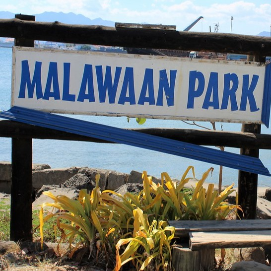

Malawaan Park
Malawaan Park is a beautiful and tranquil park located in Subic Bay Freeport Zone in the Philippines. It offers visitors a serene and relaxing environment perfect for picnics, family outings, or simply enjoying nature. With its lush greenery, clean facilities, and stunning views of the bay, Malawaan Park is a popular destination for both locals and tourists looking for a peaceful escape from the hustle and bustle of city life.
.jpg)
Location via google map
Malawaaan ParkAbout
Malawaan Park is a beautiful and serene park located in Subic Bay Freeport Zone, Philippines. It offers stunning
views of Subic Bay, lush greenery, and a peaceful atmosphere perfect for relaxation and recreation. The park features walking paths
, picnic areas, and playgrounds for children, making it an ideal spot for families and nature lovers. Additionally, Malawaan Park
is a popular venue for events and festivities, making it a vibrant and lively destination for visitors to enjoy.
Vehicle to use
There is a taxi available for transportation in front of Subic Gym.